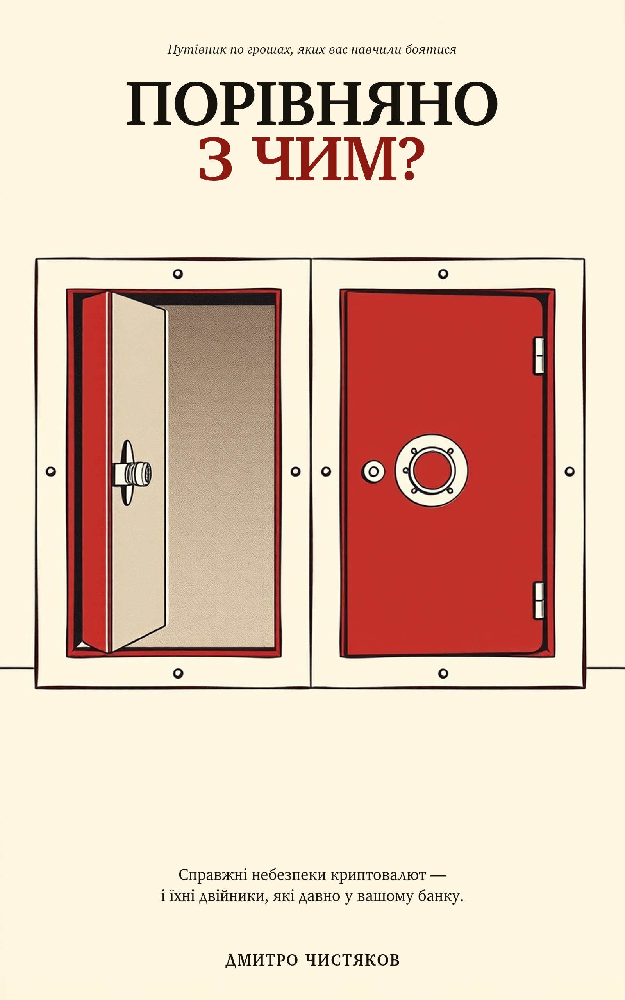

У серпні 2024-го людина у Вашингтоні втратила $243 мільйони через телефонний дзвінок. Жодного рядка коду не зламали. Жоден гаманець не відмовив. Усе спрацювало рівно так, як спроєктовано, — і саме до цієї проблеми книжка ставиться серйозно.
Побудована на публічному каталозі з 650+ задокументованих інцидентів, книжка бере справжні небезпеки крипти по одній і ставить кожну поруч із її двійником, що вже працює у звичайних фінансах. Кожен розділ закінчується чесним вердиктом, що гірше, — і вердикти не всі в один бік.
Крипта не винайшла ці злочини. Вона їх записала.
Це не ринок із шахрайством. Це шахрайство з ринком.
Непрозорість не зменшує заморожування. Вона забирає пояснення.
Ця книжка не була запланована. Роками її автор документував криптоінциденти в публічному дослідницькому каталозі — класифікуючи кожну велику крадіжку, шахрайство і крах із 2010 року, з джерелом біля кожного твердження. Десь після шестисотого інциденту закономірність стало неможливо ігнорувати: більшість цих злочинів не були новими. Технологія змінилася. Фінансові механізми — ні.
Спочатку було дослідження. Книжка — один із його результатів. Дослідження залишається публічним.
Шість правил, що зупиняють більшість крадіжок із книжки. Безкоштовний постер — роздрукуйте, поділіться.
Кожен інцидент у книжці існує в публічному записі — судові документи, звіти регуляторів, транзакції в блокчейні, які може прочитати будь-хто. Дивіться самі: індекс перевірки — твердження за твердженням, артефакт за артефактом.
Дмитро Чистяков — автор OAK, публічного каталогу 650+ задокументованих криптоінцидентів. Працював у банківській сфері, кібербезпеці та AI — і написав книжку, якої йому самому бракувало, коли він уперше вирішував, чи заходити в крипту.